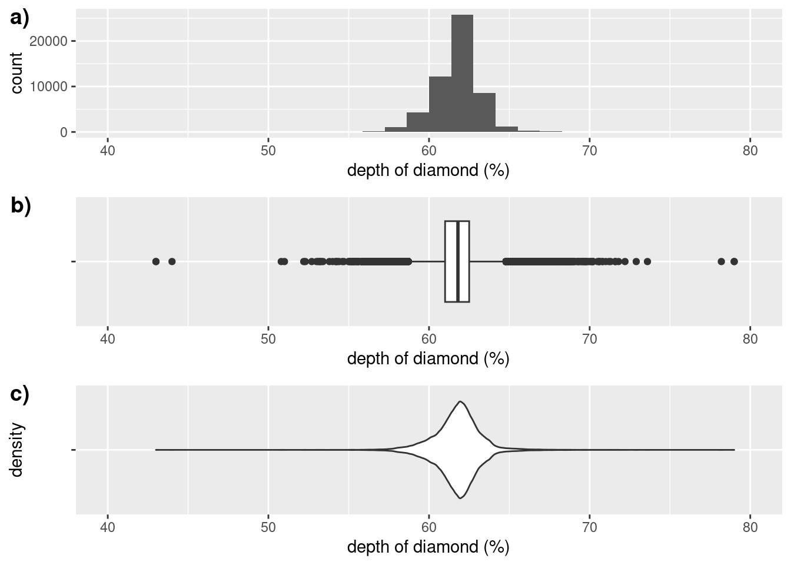

8Exploratory Data Analysis and Scientific Discovery
8.1 What is EDA?
8.1.1 Exploratory Data Analysis (EDA)
Exploratory data analysis, or EDA for short, is a vague, hard-to-define concept… but is also the activity that will occupy much of your time as a data scientist.
Here’s the problem:
When you first get a dataset, you don’t know very much about it. You probably choose the dataset because you thought it might help you solve a particular problem, but you don’t know how (or if) the data can help you do that, or what other nuances might be present in the dataset.
So, the first step is to do a little digging: open the data up, and:
Plot a few basic graphs (EDA is mostly done with graphs because they make it very easy to spot patterns).
Calculate some simple statistics (e.g. averages and ranges)
This basic analysis will probably give you some ideas about the data. You’ll probably spot some patterns that bear further investigation, or maybe some issues that you’ll need to address.
How do you do this? More analysis, visualization, and general experimentation, which in turn will reveal more potential patterns, and so the cycle continues…
Your end goal is to find some interesting questions in the dataset that deserve some kind of follow-up.
Does this seem all seem vague and open-ended? That’s because it is fundamentally a creative activity. There’s no one “right way” to create a painting or a book. Exploratory data analysis is the same. And just like those other creative activities, the way to get better is to practice.
8.1.2 Types of variation to explore
Hopefully you are now convinced why graphing data is important. But what type of graphs should you create?
The rest of this tutorial will go through different types of graphs, but here are some general concepts to bear in mind:
We can broadly divide EDA into two types: univariate and multivariate
Univariate, or “one variable”, analysis looks at the variation within a single variable’s values. Our goal here is to understand the distribution of this variable.
Multivariate (i.e. “many variables”) refers to analysis of 2 or more variables where we want to examine the covariance between variables. In other words, how does one variable change in response to changes in another.
As a general principle, you should do univariate EDA first before multivariate EDA.
We have put together a flow chart to help you pick the right type of graph for particular types of data and analysis goals: available as a PDF here.
8.2 Starting EDA
8.2.1 A “first steps” EDA checklist
Here’s a checklist of things to check when you begin EDA on a dataset.
Formulate your question
Load the data and check the dataset’s documentation
It’s generally a good idea to go into EDA with a question in mind.
The question doesn’t have to be perfect - indeed, you might well decide that the question can be improved after you’ve explored the data.
However, having a question in mind allows us to focus our EDA and not get distracted by the huge number of possibilities that we can explore with a single dataset.
So: what makes a good question?
In general, we want:
to be as specific as possible,
while still being interesting.
Specificity is good because it makes our analysis shorter and more direct. Broad questions are often of more general interest, but it is harder to come up with an approach to answering them.
An analogy is a New Year’s resolution: consider “Exercise more” vs. “Go for a 30 minute run 3x per week.” One of these is specific and measurable (while still being relevant to the overall goal of increasing your fitness), while the other is much broader and less-defined (and potentially easier to weasel out of…).
For this tutorial, our starting question will be:
What is the effect of the size of a diamond on its price?
This is a better starting place that a broader question such as “What factors influence diamond prices?” Where would we start with such a question? Not only would we want data on the physical characteristics of diamonds, but probably also on the global supply of diamonds, the controls imposed by diamond cartels, the effect of advertizing to make diamonds seem exclusive, popular campaigns against blood diamonds… we could spend all day just thinking about the question, and never get to the actual EDA!
Common types of EDA questions are: * What is the distribution of a variable? * What are the relationships between two or more variables? * Are there outliers? * Are there any unusual patterns or artefacts in our data that might reduce its usefulness?
8.2.3 Load the data and read the documentation
For this tutorial, we will be using the diamonds dataset, which is automatically loaded with the ggplot2 graphing package.
This means that you just need to run library(ggplot2) or library(tidyverse) (the tidyverse meta-package includes ggplot2), and the diamonds dataset will be available for you to use.
In the real world, loading data tends to be a much messier task (a topic for another day: Chapter 13).
8.2.3.1 Check the dataset’s documentation
Most datasets come with documentation describing the data that they contain.
In R, most datasets that come as part of a package have some kind of documentation page. In RStudio, you can bring this up by running ?name_of_dataset in the console, e.g. ?diamonds. That won’t work in this tutorial, but you can also see the diamonds documentation page online here: https://ggplot2.tidyverse.org/reference/diamonds.html
8.2.4 Get an overview of the data
We can use the glimpse function to get a compact overview of a dataframe.
Note: the glimpse function is a modern “tidyverse” version of an older R function called str.
Run the glimpse function to get an overview of the columns in the diamonds dataset.
8.2.5 Look at the first and last rows of your dataframe
Sometimes dataset creators start with grand intentions, but motivation or reality gets in the way. Because of this, the data at the top of datasets often looks great. However, the last rows in the dataset may contain incomplete or problematic data that got added on at the end.
We can examine both the first and last rows of the dataset with the head and tail functions respectively. The syntax of these functions is head(dataset_name), e.g.:
head(diamonds)
# A tibble: 6 × 10
carat cut color clarity depth table price x y z
<dbl> <ord> <ord> <ord> <dbl> <dbl> <int> <dbl> <dbl> <dbl>
1 0.23 Ideal E SI2 61.5 55 326 3.95 3.98 2.43
2 0.21 Premium E SI1 59.8 61 326 3.89 3.84 2.31
3 0.23 Good E VS1 56.9 65 327 4.05 4.07 2.31
4 0.29 Premium I VS2 62.4 58 334 4.2 4.23 2.63
5 0.31 Good J SI2 63.3 58 335 4.34 4.35 2.75
6 0.24 Very Good J VVS2 62.8 57 336 3.94 3.96 2.48
to display 6 rows from the top (or bottom) of the dataset. We can change the number of rows to display with the second argument:
head(diamonds, 10)
# A tibble: 10 × 10
carat cut color clarity depth table price x y z
<dbl> <ord> <ord> <ord> <dbl> <dbl> <int> <dbl> <dbl> <dbl>
1 0.23 Ideal E SI2 61.5 55 326 3.95 3.98 2.43
2 0.21 Premium E SI1 59.8 61 326 3.89 3.84 2.31
3 0.23 Good E VS1 56.9 65 327 4.05 4.07 2.31
4 0.29 Premium I VS2 62.4 58 334 4.2 4.23 2.63
5 0.31 Good J SI2 63.3 58 335 4.34 4.35 2.75
6 0.24 Very Good J VVS2 62.8 57 336 3.94 3.96 2.48
7 0.24 Very Good I VVS1 62.3 57 336 3.95 3.98 2.47
8 0.26 Very Good H SI1 61.9 55 337 4.07 4.11 2.53
9 0.22 Fair E VS2 65.1 61 337 3.87 3.78 2.49
10 0.23 Very Good H VS1 59.4 61 338 4 4.05 2.39
We could also rewrite the previous code chunk using the pipe operator:
diamonds %>%head(10)
TODO: book exercises
Use the tail function to display the last 8 rows of the diamonds dataframe. Note that this code uses the pipe operator %>% to supply the first.
As you can see, the diamonds data is actually pretty nice at both the top and the bottom (as you might hope for an “offical” ggplot dataset). The example datasets that come with packages are often nice like this - unfortunately real-world data is usually less friendly.
8.2.6 Make sure that the data makes sense
We expect certain things about our dataset to be true:
Does the dataset have the correct number of rows and columns?
Do the numbers in each column make sense:
does a column called date contain dates, or does it have random numbers that don’t seem to be dates?
does a column called USA_states contain all 50 states as you might expect? Or does it also contain “non-state” regions such as the District of Columbia and Puerto Rico.
What is an observation in the dataset?
In the diamonds dataset, each row represents a different diamond. This is probably what you would expect. But what if the dataset rows each represented a diamond store instead, and the numbers were the average of all the diamonds in that shop? In this scenario, the data (and what questions we can ask with it) would be very different.
Are the values plausible?
For example, in the diamonds dataset, are the prices for the diamonds realistic? Is the range of values of the carat variable realistic (for example, most diamonds are pretty small, so if this dataset claimed to have data on 50,000 diamonds that were all 100 carats or larger, then we might be a little suspicious…)
8.2.7 Start the EDA cycle
Now that you’ve verified the data, you can start on the EDA process.
As a reminder, we usually want to start with univariate analysis of each variable separately. Programs and data are both complicated, so it is always a good idea to start small and simple, and add in complexity gradually.
If we do the opposite and start complicated, it is easy to make small mistakes and assumptions which might make our final conclusions wrong!
Calculate summary statistics the 6 summary statistics listed above for the continuous variable carat from the diamonds dataframe.
In our original question, we were interested in two variables: size (i.e. carat) and price. We should therefore calculate summary statistics for the price variable as well
TODO: book exercises
Repeat your summary statistics calculation for the continuous variable price.
If a variable is categorical, we can summarize it by looking at the proportions of observations in different categories. To do this we will first group_by() the categorical variable in question:
the n() function returns the number of rows within each group. It does not need an argument.
the nrow() function also calculates the number of rows, but needs an argument (a variable whose rows it should count).
the . argument inside nrow is used to refer to the original dataframe that we piped in.
Thus nrow(.) will give us the total number of rows in the original dataframe (ignoring the groups that we created).
TODO: book exercises
Calculate summary statistics for the categorical cut column of the diamonds dataframe.
8.3.2 Graphical analysis of carat
With graphs, we want to visualize the distribution of a variable.
One good graph for visualizing the distributions of one continuous variable is a histogram.
We have already learned how to create ggplot histograms using the geom_histogram() layer. For example, this code would create a histogram of the price column from the diamonds dataframe:
Both of these graphs show the same distribution, just in different ways:
TODO: book exercises
Create a histogram of the carat variable.
Plots of distributions show common versus less common values of a variable. This allows us to answer questions like:
What values are common? Does this match your prior expectations?
What values are uncommon? Again, does this match your prior expectation?
Does the overall appearance show any unusual patterns that bear further investigation?
One thing you might note is that the distribution is not very smooth. To make it smoother, we could increase the size of the bins. However, to see what’s going on with this distribution, let’s decrease the bin size.
TODO: book exercises
Create another histogram of the carat variable, but this time set the binwidth parameter to 0.01
Interesting! There’s an odd sawtooth pattern to this data that suggests several clusters to the data. This pattern raises several interesting questions:
What’s causing these groups (“clusters”)?
Why does each cluster have a sharp left-hand side, and a long tail on the right?
8.3.3price visualization
We also want to look a the distribution of the price variable. Let’s do that with a new type of graph: the box plot.
Box plots (also called box-and-whisker plots) visualize not only the distribution but also show several summary statistics:
TODO: replace with my own image that I know I own copyright of.
set.seed(42)x <-c(rnorm(100, 20, 3), rnorm(5, 20, 6))arrow_df <-tibble(x_start =c(median(x), quantile(x)[2]-1.1, quantile(x)[4]+1.1, 12, 30),x_end =c(median(x), quantile(x)[2], quantile(x)[4], 11.1, 30.9),y_start =c(1.7, 1.7, 1.7, 1.5, 1.5),y_end =c(1.45, 1.45, 1.45, 1.1, 1.1),label =c("Median", "25th Percentile", "75th Percentile", "Outlier", "Outlier"))ggplot() +geom_boxplot(aes( x, "" ),fill ="lightblue") +labs(x ="x-axis = range of plotted variable", y ="",title ="Parts of a box plot") +theme_minimal() +geom_segment(aes(x = x_start, y = y_start, xend = x_end, yend = y_end),data = arrow_df, arrow =arrow(length =unit(0.2, "cm"), type="closed") ) +geom_text(aes(x = x_start, y = y_start +0.05, label = label),data = arrow_df ) +geom_brace( # upper whiskeraes(c(quantile(x)[4]+0.1,27.1#1.5*IQR(x)+quantile(x)[4] ), c(0.59, 0.5)), rotate =180,inherit.data=FALSE ) +geom_brace( # lower whiskeraes(c(quantile(x)[2] -0.1,quantile(x)[2] -1.5*IQR(x) +0.2 ), c(0.59, 0.5)), rotate =180,inherit.data=FALSE ) +geom_segment( # This arrow forces the y axis to extend high enoughaes(x =11, y =1.9, xend =11, yend =1.45), color ="white",arrow =arrow(length =unit(0.2, "cm"), type="closed") ) +annotate("text", x =24.5, y =0.45, label ="Upper \"whisker\"") +annotate("text", x =15.0, y =0.45, label ="Lower \"whisker\"")
knitr::include_graphics("../img/boxplot.png")
We create a box plot using the geom_boxplot geom function. There are two required aesthetic mappings in a box plot (note that in ggplot the orientation of the boxplot is rotated 90 degrees):
x should be a categorical variable to create different box plots for.
y is the variable that we want to show the distribution of.
One slightly strange feature of the default box plot is that ggplot will put some meaningless numbers on the y-axis. We can get rid of these by mapping the y aesthetic to an empty character string:
ggplot(data = diamonds) +geom_boxplot(mapping =aes(x = price, y =""))
This still leaves us with an unnecessary y axis label, but we can also get rid of that with the labs() function.
TODO: book exercises
Create a single box plot of the price variable by providing the string "price" as the argument to the x parameter.
8.3.4 Violin plots
Another graph that shows the distribution of a single variable is the violin plot. This combines aspects of the histogram and box plot into a single graph.
The code for a violin plot is almost identical to the code or a box plot - we just use the geom_violin() geom function:
diamonds %>%ggplot() +geom_violin(mapping =aes(x = depth, y =""))
How do we interpret a violin plot? Like a histogram, the height (in the direction of the y-axis) of the violin tells us how many observations fall in that part of the graph. However, note that the height is mirrored - i.e. it extends both up and down (rather than just up from the x-axis, like in a histogram).
To the similarities between a histogram and violin plot clearer, we can overlay our violin plot and our histogram of depth:
We can see that the the violin is widest where the histogram’s bins are also tallest (around depth = 62). You can think of the violin’s border as a line joining the tops of each of the histograms bins.1
2: Note that a violin plot shows the density of observations (which is kind of like the fraction of observations in that part of the graph), whereas a histogram shows the count. I have scaled down the histogram’s y-axis in this plot so that it overlaps the violin more closely.
One nice thing about the violin plot is that it shows us the long thin tails of the data, whereas the histogram’s bins are so small in the tails that they are invisible.
We can do a similar comparison of the violin plot with a box plot:
Again we see a lot of similarity:
The box of the box plot (the middle 50% of observations) corresponds with the widest part of the violin plot.
The violin’s tails extend as far as the most extreme outliers in the box plot.
8.3.5 Describing distributions
We have seen three different plots that can visualize the distribution of a single continuous variable. Here’s a comparison:
What conclusions can we draw from these graphs? First, we can describe the center of the distribution. In this particular example, each of the plots shows a very similar center (around 62%), but this won’t necessarily be the case because each graph shows the center in a different way. Secondly we can describe the shape, which in this case is unimodal and relatively symmetric.
Here is how different distribution shapes will look in the three types of plots:
Which plot should you use? That’s going to depend on the data, and what you want to explore or communicate about it. Box plots, for example, are good for showing outliers and are the only one of the three plots that shows an exact central statistic (the median), whereas histograms or violin plots present a more fine-grained view of the shape of the distribution. The following table shows a comparison:
Type of graph
Center
Other notes
Histogram
Bin with the most observations
Box plot
Median
Shows outliers, but not modality
Violin plot
Greatest density
It’s often a good idea to make a variety of different graphs exploring the same thing to see if you can get a different view on the data. When you come to present your data, you can pick one of those graphs that best communicates what you want to show.
8.4 Multivariate covariation
When we have multiple variables, we want to understand how their variation is related: this is called covariation.
8.4.1 Co-variation with summary statistics
How can we boil the covariation of two or more variables down to a single number?[^covariation_stats]
With continuous variables, we can calculate a statistic that measure the correlation. There are various such correlation coefficients, but the key idea is that they indicate how much of the variation in different variables is shared.
One such number is Pearson’s correlation coefficient, which varies between -1 and 1.
To calculate pairwise correlations between columns in a dataframe, we can use the correlate() function from the corrr package. For example, we can look at the correlations between the carat, depth, and price columns of the diamonds dataframe:
# A tibble: 3 × 4
term carat depth price
<chr> <dbl> <dbl> <dbl>
1 carat NA 0.0282 0.922
2 depth 0.0282 NA -0.0106
3 price 0.922 -0.0106 NA
We can see that there is a strong positive correlation of about 0.92 between carat and price (unsurprisingly!), but a weak relationship between the other two pairs of variables.
Note that each correlation is reported twice in the table above. We can remove these unnecessary duplications by piping this output dataframe of correlate() onto the shave() function (also from the corrr package), which will just keep one half of the correlations.
We can also make the output a little prettier by piping the output dataframe of shave() onto a third function called fashion(), which will round the long correlation coefficients for us to just two decimal places:
If you have two continuous variables, such as price and carat in the diamonds dataset, then a scatter plot is generally a good method of examining their covariation.
We learned how to create ggplot scatter plots using the geom_point() function in Section 7.4. Here, for example, is what a scatter plot of price vs. carat looks like:
TODO: book exercises: recreate that plot using ggplot()
Create a scatter plot with price on the y-axis and carat on the x-axis.
We can see several things about this graph:
There’s obviously a positive relationship between these two variables: larger diamonds also tend to be more expensive.
There don’t seem to be any diamonds in the dataset worth more than about $18,000. However, a quick Google search tells us that such diamonds definitely exist! We are missing an entire segment of data in the more exclusive part of the diamond market. This tells us that we need to be careful if we want to do any statistical analysis of this data.
It’s hard to tell the density of the points (i.e. where most of the points fall), because in many places all the points overlap in a blob.
We have a several options to show density.
We could make the points transparent with the alpha parameter. Then dense regions would be darker (because there would be many overlapping transparent points). For example, with alpha = 0.1:
diamonds %>%ggplot() +geom_point(mapping =aes(x = carat, y = price), alpha=0.1) +labs(title ="Scatter plot of dimond price vs size", y ="price ($)", x ="size (carats)")
::: {.cell-output-display} ::: :::
This graph is pretty interesting, because we can see a banding pattern at rounder values of the carat variable, e.g. 1.5, 2. It seems strange to have these jumps, and this is likely an artefact of the way the data is recorded, i.e. diamond appraisers are more likely to round a the diamond size to 0 or 1 decimal places.4
5: And the fact that there are no points on the left of these bands compared to the right suggests that either we are missing a bunch of diamonds on the small side of each of these thresholds (which seems unlikely), or that diamond sizes are being rounded up. If we were suspicious people, we might start to ask why jewellers might prefer to round diamond sizes up instead of down…
We can also create a heat map, using the geom_bin2d() geom function, which is a colored grid where the intensity of the color represents a value on a scale - in this case, the color represents the number of observations (i.e. diamonds) that fall in that grid square.
diamonds %>%ggplot() +geom_bin2d(mapping =aes(x = carat, y = price)) +labs(title ="Heat map of dimond price vs size", y ="price ($)", x ="size (carats)")
::: {.cell-output-display} ::: :::
This is essentially a 2-dimensional histogram. Each grid square is like a bin in a regular histogram. In this heat map, the color represents the “height” of the 2-dimensional bin, i.e. how many diamonds fall into each cell of the heat map’s grid.
This graph also shows that small and cheap diamonds are by far the most common (the light blue grid squares).
8.4.3 Visualizing continuous and categorical variables
With a mix of continuous and categorical variables, the general strategy is to graph the continuous variable(s) and then break the graph down into separate parts by the categorical variable(s).
For example, say you had one continuous variable and one categorical variable. We can graph the single continuous variable, using one of the graph types appropriate for a single continuous variable such as a histogram, box plot, or violin plot, and then break that graph into different pieces using the categorical variable.
For example, let’s say we want to visualize the relationship between color and price of our diamonds. One way to break our graphs down in discrete pieces is using the fill aesthetic to add colors to the inside of our shapes:

Note that colors are randomly assigned by ggplot (i.e. these are not the actual colors of the diamonds). We can see, however, that there does seem to be a small effect of color on price: although most of the distributions overlap, the center of some color categories occurs at higher prices than others. This leads to a strange conclusion: the diamond color categories range from the best coloring (“D”) to the worst coloring (“J”), just from our graphs above it almost looks like the worst colored diamonds have higher prices.
The graphs above using the previously ignored y-axis of the box plot and violin plot to create separate boxes and violins. We can actually achieve the same effect without color6 by mapping the categorical variable to the y aesthetic instead of the fill aesthetic:
7: Useful if you are restricted to black and white.
Unfortunately we cannot do this with our histogram because it already uses the y-axis for the count. The other problem with the default colored histogram is that each color is stacked on top of the colors beneath it. Unfortunately this violates one of the principles of visualization that we previously learned about, which is that if we are using length (i.e. height of bins) to communicate information, then we ideally want those lengths to start at the same point. If, as in the histogram above, the bins all start in different positions, then we have to mentally try to move the bins, and then it becomes very hard to figure out what is going on. For example it is almost impossible to see the distribution differences in the histogram that are readily apparent in the box plots and violin plots.
We have two strategies to fix this:
We can add the position = "identity" argument to the geom_histogram() function to start all the colored bins from the x-axis, and then because the different colors will all overlap we will also need to add the alpha parameter to make them transparent.
Instead of solid bars, we can just connect the top of each bin with lines. This type of graph is called a frequency polygon, and can be created with the geom_freqpoly() geom function.
As we can see, the overlapping histogram has so many colors that it is a muddy mess! In my experience this muddle of colors is unavoidable if you have more than two categories, so colored overlapping histograms should usually only be used if you have two categories (or if you have categories that do not overlap much along the x-axis). By comparison, the difference between diamond types are definitely easier to spot in the frequency polygon.
This frequency polygon also makes it clear why the J colored diamonds seemed to be more expensive in the violin and box plots: we just don’t have many small (and cheaper) poorly colored diamonds. Either such diamonds don’t exist or, more likely, they were not included in this dataset because nobody cares about diamonds that are both small and ugly.
8.4.3.1 Faceting
Another strategy for breaking our graph up by a categorical variable is to split it into sub-plots. In ggplot speak this is called “faceting”. We do this by adding an additional faceting function to the end of our graph code.
We can add the facet_wrap() function to any ggplot graph to facet over a single categorical variable. This will create a separate sub-plot (“facet”) for each category in that categorical variable. For example, to facet our histogram of diamond prices over the cut variable:
Note how we passed the argument ~ cut to facet_wrap() to tell it what categorical variable to facet over? You must include the squiggly ~ symbol before the faceting variable’s name in the facet_wrap() function, otherwise you will get an error.
8.4.3.2 Adding more variables
To add more variables, you can combine the different aesthetics and functions. Typically each variable you want to visualize will need to be mapped to its own aesthetic or facet.
For example, if we wanted to visualize two continuous variables and two categorical variables, then we could first map the continuous variables to the x- and y-axes of a scatter plot, and then map one of the categorical variables to the color parameter and facet over the second categorical variable.
Just bear in mind that the more information you cram into a graph, the harder it will become to interpret. Here is a plot of the covariation between the price, carat, color, and cut variables from the diamonds dataframe:
diamonds |>ggplot() +geom_point(mapping =aes(x = carat, y = price, color = color)) +facet_wrap(~ cut) +labs(title ="Effect of color, cut, and size on diamond price",x ="size (carats)",y ="price (USD)" )
8.4.4 Visualizing multiple categorical variables
TODO
8.4.5 The importance of EDA
Visualization is a vital part of exploratory data analysis and we need to pair it with summary statistics to make sure that we are not being fooled by those statistics.
Consider Anscombe’s quartet, a series of 4 small datasets (each has 11 observations of an x and a y variable).
characterize relationships between variables: are they linear (straight) or non-linear (curved)?
identify hypotheses (theories) about the data
spot problems that might exist in the data
TODO exercises
8.5 Your turn
8.5.1 Do some EDA
There are all kinds of other graphs we can plot.
In the code cells below, experiment on your own with some exploratory data analysis of the diamonds dataset.
From our previous explorations, it there is a positive relationship between price and carat; in other words, as one variable increases, so does the other. However:
the relationship was not perfect: there seemed to be some uneven scatter. What other variables might be influencing this relationship?
relatedly, what other variables are related to price (& what is the variation within those other variables by themselves)?
TODO: book exercises
In the following code boxes, play around with some EDA of your own. You might find it helpful to look at the “What graph should I plot” cheatsheet for inspiration, and remember that you can always Google a geom function (or ask an instructor) to get more information on how to use it.